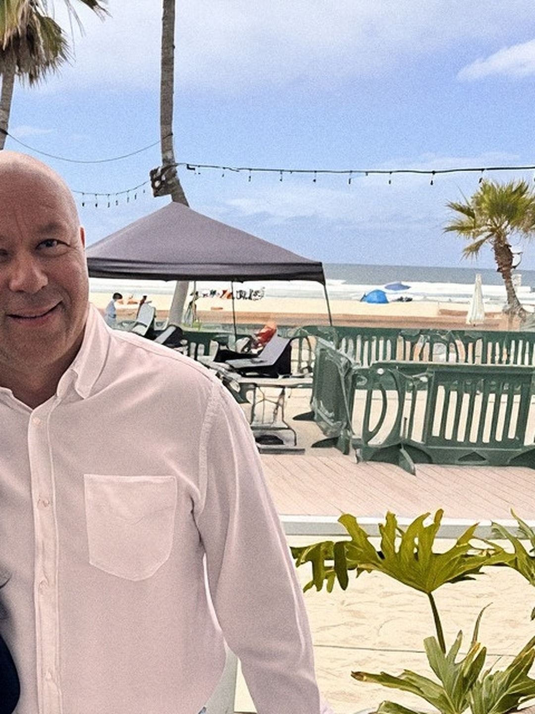

Tell it plainly when the moment calls for it. It shows the standard in action.
The peer room
The peers you wish you'd had
now in one room
A focused position, finished LinkedIn profiles, and a practical plan for becoming the founder San Diego's driven owners and experts call before they try to grow alone.
One position
One character
Two profiles, ready to paste
Thirty days of direction
One portable AI pack

Your Strategy
Be the room experts join for peers, not pitches
Positioning statement
Bright Business is the community of reliable peers and experts Florin wished he had when he started in Romania: a Vistage-serious, club-warm room that grows the business without becoming a lead mill.
Most networking groups lead with the pitch and the badge. Florin leads with the room: reliable peers and experts, screened for fit, meeting like a professional board that still feels like a social club. His authority comes from building the community he needed and refusing to compromise it for transactional members, even when that costs him a club lead.
- Category
- Founder, Bright Business
- Distinctive idea
- The peers you wish you'd had
- Founder role
- Florin is the founder. Bright Business is the room he built and still runs.
The Focus Star
Five lines, one brand
-
Product
A peer community that accelerates ethical growth.
The offer is the room and the cadence, not a transactional lead list and not a slogan. Growth is the product. Valuation and being exit-ready follow from real growth; they are not shortcuts he sells instead of it.
-
People
Driven experts who love their craft and feel professionally isolated.
Persona: Anna is in the room: skilled, sometimes introverted or shy, sometimes speaking English as a second language, and still ready to be seen. The room refuses transactional networkers. Quiet, skilled experts are exactly who it is for.
-
Purpose
Build the community of peers and experts you wish you'd had.
Create the room you needed. Do not become the room you left. He is not filling a market gap; he is building the room that was missing for him, so the next driven owner does not start as alone as he did.
-
Promise
Collaboration over transaction.
Brand DNA: Growth. If it turns the room into a hunt, it is out. Growth inside a room that stays friendly and collaborative, or it is not the brand.
-
Personality
Professional like a peer board, warm like a social club.
Personality is the feel of the room: serious collaboration with human warmth. Structured enough to run like a real peer board. Warm enough that members actually want to be in the room.
Point of view
You do not grow a business alone. You grow it in the right room, with the right peers.
01Growth that harms someone else or bends ethics is not growth. It gets removed from the room, even when it costs him a club lead.
02A business that only works because you are in it every hour is not finished. The room exists to change that.
03Reliable peers and experts beat any amount of hustling alone. That is what was missing in Romania, and it is what the room replaces.
Evidence bank
Why the room actually works
Use in founder-story posts and the About section. It gives the reason the room exists.
Use when explaining what a room actually feels like to a prospective member.
Use as evidence the model works, not as a claim about how little he is involved.
Membership numbers, revenue figures, and specific member names go public only with permission and in the exact words Florin approves.
Your Identity
Structured room, real warmth
Personality
One founder, every channel
Structured and warm. Professional peer board with a social club's ease. Direct, growth-minded, never transactional.
This is the character every post, photo, and introduction keeps. A driven owner should feel this is a real peer board, not a mixer, and that Florin already knows who belongs in the room.
He runs it like a peer board: an agenda, real accountability, a lead who gets replaced if the standard slips. It never turns cold.
Short, confident sentences about growth, valuation, and exit-readiness. No jargon, no hustle-culture noise.
Real club settings, real members, real conversations. Stock boardrooms and keynote stages stay out of frame.
Brand archetype
The sage who runs a tight room
A professional peer board that still feels like a social club: standards and warmth in the same room. The mix follows from that.
- Sage leads. The vetting, the growth read, the standard the room protects. This is the position itself.
- Ruler and Hero carry it. Ruler holds the standard, structure, and the professional-board feel. Hero is the founder's own push to build this room himself.
- Friend supports. The room where members actually know each other, not a name-tag mixer.
- Explorer and Outlaw stay a trace. Growth as forward motion, and a refusal to run this like a transactional lead-swap club.
What this is not: a hype machine, a lead-gen mixer, or a hustle-culture stage. No shortcuts, no growth-at-all-costs, no ego-centric members.
Voice principles
Talk like the founder who built the room himself
01
Lead with the room, name who it is not for
Open with the room itself: peers, standards, growth, and then name plainly who does not belong.
This is not a mixer. If you are here to trade business cards and leave, this is not your room.
02
Use specific founder truth
Speak from what actually happened, not from a mission statement. One real decision beats ten claims.
I let a club lead go for running the room the wrong way. That is what holding the standard actually costs.
03
Make member craft visible
The room is the proof. Show the peers and experts doing the work, not Florin alone on a stage.
Watch the room work through a real problem, then tell me it is just networking.
04
Close with a useful next step
End on one clear action: sit in on a room, meet a club lead, ask a specific question.
Come sit in on one room. If it is not for you, you will know by the end of it.
How it looks
The room itself is the photo
Florin: shaved head. Photographed as himself, in the room, not styled for a stage.
Real club rooms: roundtables, laptops, name tents, members mid-conversation. Not a stock boardroom.
Structured and warm at the same time. A working room, caught mid-conversation.
No stock handshake photos, no hustle-culture graphics, no red accents. Heading type follows Familjen Grotesk from the live Bright Business site. A logo is not designed in this Sprint.
Your profiles
One line on a structured field, no stock handshake

FD
Florin Diumea
Florin Diumea | Founder, Bright Business | Peer room for driven owners and experts | San Diego
San Diego, CaliforniaHeadline
Florin Diumea | Founder, Bright Business | Peer room for driven owners and experts | San Diego
Florin Diumea | Founder, Bright Business | Peer room for driven owners and experts | San DiegoAbout
Ready to paste
I founded Bright Business to give driven owners and experts the room of reliable peers I wished I had when I started my own business in Romania.
It runs like a professional peer board with the ease of a social club: real accountability, real standards, and members who actually know each other. I removed a club lead once for running the room the wrong way. That standard has not moved since.
I host sessions across San Diego for owners and experts who want to grow without doing it alone, and I bring in the right club leads so the room runs well beyond just me.
If you are a driven owner or expert who feels like you have been building alone, come sit in on one room.
Featured
Proof in the order a referral partner needs it
- 01The peers you wish you'd hadPosition
The position post, in the same words as LinkedIn. The first thing a referral partner sees.
- 02The standard, in one storyStandard
Why Florin let a club lead go. The thing people remember and repeat.
- 03The next sessionCommunity proof
Date, room, and how to sit in as a guest. Replace it after every session.
Your 30-Day Plan
Thirty days that fill the room
The objective
Fill the next three room sessions with driven owners and experts who fit, and turn LinkedIn into a clear front door for the room. Primary signal: ten qualified conversations with prospective members booked from LinkedIn, or referrals in thirty days.Rebuild the profile around one line
Update the name field, the bio, the highlights, and the three pinned posts so the room and the standard are clear before anyone reads a caption.
Fill the next guest session
Set a date, name what a guest will see in the room, and invite driven owners and experts who fit through existing members.
Activate direct trust
Send ten direct messages to people who fit the room or know someone who does. Ask one direct question. Make replying easy.
Four-week sequence
Run these four weeks in order
-
Week01Profile + point of view
Set the position
Update the LinkedIn profiles. Publish the three pinned posts. Send the first five direct messages.
-
Week02Proof + invitation
Prove it with the room
Publish one post per territory. Announce the next guest session and name exactly what a guest will see.
-
Week03Session + follow-up
Host the room
Run the guest session. Collect every question a guest asks. Follow up with each guest inside a week.
-
Week04Answers + outreach
Turn attention into members
Post what came out of the session. Send the last five direct messages. Review the ten conversations and note what each person asked first.
Three content territories
Nine ideas, one consistent room
The Peers You Wish You'd Had
- The Romania origin, in plain words
- What changes for an owner once the right peers are in the room
- The first thing Florin asks a prospective member
Not a Mixer
- What actually gets someone removed from the room
- Why the room is not a corporate boardroom or a hyper-casual hangout
- A real room moment, told with permission and without names
Growth Without Doing It Alone
- What the 80 percent figure actually means
- How Florin chooses a club lead
- One growth, valuation, or exit-readiness idea, explained plainly
Five plays
Put the room to work beyond the feed
Campaign
Five questions every isolated owner should be able to answer
A short checklist that turns the position into something useful. Each question becomes a post, a story, and a reason to message about a guest seat.
- Audience
- Driven owners and experts building alone
- Next step
- A guest seat at the next room session
- Measure
- Direct messages asking for a guest seat
PR
The room that removes members for growing the wrong way
Offer San Diego business media a practical angle: a peer club with a standard strict enough to remove someone over it. Lead with the standard, not with a pitch for the club.
- Targets
- San Diego business outlets and founder-focused podcasts
- Have ready
- Session dates and the club-lead story, told in Florin's own words
- Measure
- Interview requests and guest-session sign-ups
Collaboration
A guest session with a partner room
Co-host a session with an adjacent San Diego business group: a chamber, an accelerator, or a founder meetup. The partner brings guests who fit. Florin brings the room.
- Partner
- A San Diego group with the same kind of driven owner
- Format
- One guest session plus a short debrief
- Measure
- Guests converted into first conversations
Pro bono
One growth read, no strings
Offer one free growth read to a driven owner outside the room each month. Walk through where the business depends on them, and share the lesson afterward with permission and without names.
- Rule
- One read, a named owner, one follow-up
- Value
- Real service and a grounded story
- Measure
- Guest seats booked from the read
Email + outreach
Ten people who already trust him
Message ten people who fit the room or know someone who does. Name the room in one sentence, ask one direct question, and make replying easy. In his own words, from his own account.
- Audience
- Members, past guests, and people who know a fit
- Asset
- The five questions checklist
- Measure
- Three guest seats booked from ten messages
Use With AI
Take the room's strategy into any language model
The Markdown pack keeps your position, voice, proof, and factual boundaries together. Paste it at the start of a new conversation, then add one of the prompts below.
- Format
- Plain Markdown
- Works with
- ChatGPT, Claude, Gemini, Copilot, and other LLMs
- Includes
- Identity, instructions, context, examples, boundaries, and prompts
Loading your context pack...
Starter prompts
Choose the job. Keep the room attached
01
Write an LinkedIn post
Using the brand context above, write one LinkedIn post in Florin's voice for The Peers You Wish You'd Had territory. Audience: a driven owner or expert in San Diego who feels professionally isolated. Open with the isolation, give one direct idea about the room, and close with an invitation to sit in on a session. Under 120 words, no emoji in the body, at most three hashtags at the end.
02
Plan a month of posts
Using the brand context above, draft a four-week LinkedIn plan with three posts per week. Rotate the three content territories, mark which posts support the next guest session, and give each post a one-line angle and a format (photo, talking video, carousel, or story). Keep every angle inside the factual boundaries.
03
Outline the guest session
Using the brand context above, outline a session for prospective members titled "Five questions every isolated owner should be able to answer." Give the five questions, what Florin covers for each, the one handout, and how a guest becomes a member. No membership pitch inside the session itself.
04
Shape a collaboration
Using the brand context above, write a short message to a San Diego business group (a chamber, an accelerator, or a founder meetup) proposing a joint guest session. Explain what Florin covers, what the partner provides, and why it is useful for their group. Plain, direct, no hard sell.
05
Build a campaign brief
Using the brand context above, plan a two-week campaign around the "Five questions" checklist: the checklist itself, three posts that each unpack a single question, a story sequence, and a follow-up message for people who ask for a guest seat. Keep the tone inside the voice principles.
06
Prepare warm outreach
Using the brand context above, write a short message Florin can send to ten people he already knows who fit the room or know someone who does. Name what the room is now, ask one direct question, and make replying easy. Under 80 words.